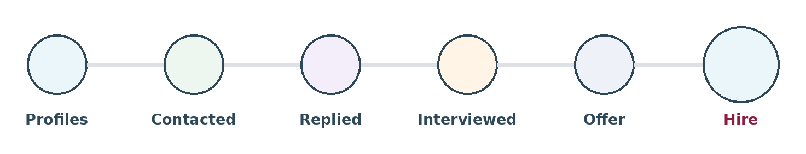

Before you look for anyone, work out how many people you need to find. The number is usually bigger than the hiring manager thinks, and smaller than the panic that arrives in week three.
{kind=link}

Work backwards from the hire
One hire usually needs two offers, because one gets turned down more often than anyone plans for. Two offers need a handful of final-stage candidates. Those need more first interviews. Those need more replies. Those need many more people contacted.
Each step loses people. Multiply the losses together and you get the number that matters: how many people you need at the top for one person to start.
A rough plan
These are starting numbers for a job you have never filled before. Replace every one of them with your own after two or three hires. Yours will be different, sometimes a lot.
| Stage | How many make it through | Running total for 1 hire |
|---|---|---|
| People found | — | 150–250 |
| Contacted | About 4 in 10 | 60–100 |
| Replied | About 2 in 10 | 12–25 |
| Interested and suitable | About 4 in 10 | 6–10 |
| First interview | About 7 in 10 | 5–7 |
| Final stage | About 4 in 10 | 2–3 |
| Offer | — | 1–2 |
| Accepted | 6 to 8 in 10 | 1 |
The number to watch is reply rate. It moves more than anything else here — by type of job, by how well targeted your message was, and by how many other recruiters contacted the same person that month. If your reply rate halves, you need twice as much searching for the same hire.
Different jobs, different shapes
| Type of job | What is different | What it means |
|---|---|---|
| Common, lots of candidates | Big pool, people reply | Applications may be enough on their own |
| Mid-level specialist | Enough people, lots of competition | Targeting matters more than volume |
| Niche technical | Maybe a few hundred people in the country | You are not filtering a pool. You are working through one |
| Senior or leadership | Small pool, slow conversations | Plan in months, not weeks |
The niche row is worth stopping on. When the total number of people who could do the job is smaller than the number this plan says you need, no amount of clever searching fixes it. What fixes it is changing the requirements, the salary, or the location. That is a conversation, not a search.
Using this with a hiring manager
This is the most useful thing you can bring to a manager who wants to add another requirement. Two sentences:
"That requirement takes the pool from about 900 people to about 120. At our reply rate, that turns a six-week search into a four-month one. Still want it?"
You are not refusing. You are putting a price on the request. That is much harder to argue with, and a far better position than an opinion about how difficult something is.
Do this first
Before searching, write down how many people you are aiming to find. It stops two things: the list of 20 that quietly becomes your shortlist, and the endless searching that never turns into contact because nobody decided when to stop looking.